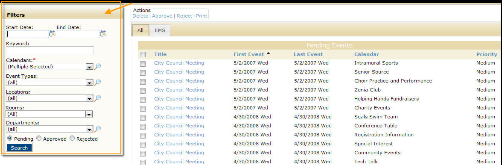
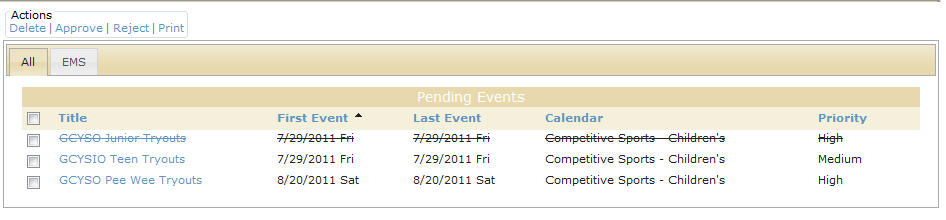

1. On the Admin menu, point to Events & Special Dates, and then click Manage Events. The Manage Events page opens.
2. Filter the events list using the Filters panel (see field definitions below).

| Field Name | Description |
| Start Date/End Date | Search for events that occur on or after the indicated start date, on or before the indicated end date, or within the specified date range. Leave these fields blank to search for all pending event requests in Master Calendar, regardless of the date. |
| Keyword | The keyword can appear in any information that is associated with the event - for example, it can appear in the event name, the event description, and so on. |
| Calendars | A list of all active calendars to which you have access as Calendar Manager. By default, all calendars to which you have access are selected as the search criteria. |
| Event Types | A list of all currently active event types in Master Calendar. Click the Lookup icon to open the Event Types dialog box and select the event types. |
| Locations | A list of all currently active event locations in Master Calendar. Click the Lookup icon to open the Locations dialog box and select the locations. |
| Rooms | A list of all currently active sub-locations in Master Calendar. Click the Lookup icon to open the Rooms dialog box and select the room. |
| Departments | A list of all currently active departments in Master Calendar. |
| Pending/Approved/Rejected | The status of the events for which to search. You can select only one value. |
3. Click Search. A list of all events that meets your search criteria appears on the Manage Events page. A single line runs through any event for which all the event dates have been canceled.
Example of a canceled event

Page tags: article:topic